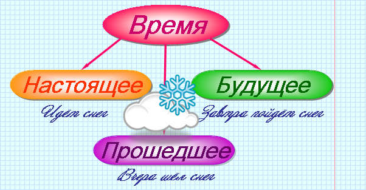

|
Глагол – это самостоятельная часть речи, которая обозначает действие или состояние предмета и отвечает на вопросы что делать? что сделать? |

 |
Глаголы в форме единственного числа прошедшего времени изменяются по
родам. Род глагола передается при помощи окончания: мужской род – нулевое окончание, женский род – а, средний род – о. |
 |
Кот пробежал (мужской род) – кошка пробежала (женский род) – животное пробежало (средний род). |
Неопределенная форма |
Основа |
Прошедшее время |
|||
| Единственное число | Множественное число | ||||
| мужской род | женский род | средний род | |||
| работать | работа- | работал | работал-а | работал-о | работал-и |
| везти | вез- | вез | везл-а | везл-о | везл-и |
| печь | печ/к- | пёк | пекл-а | пекл-о | пекл-и |